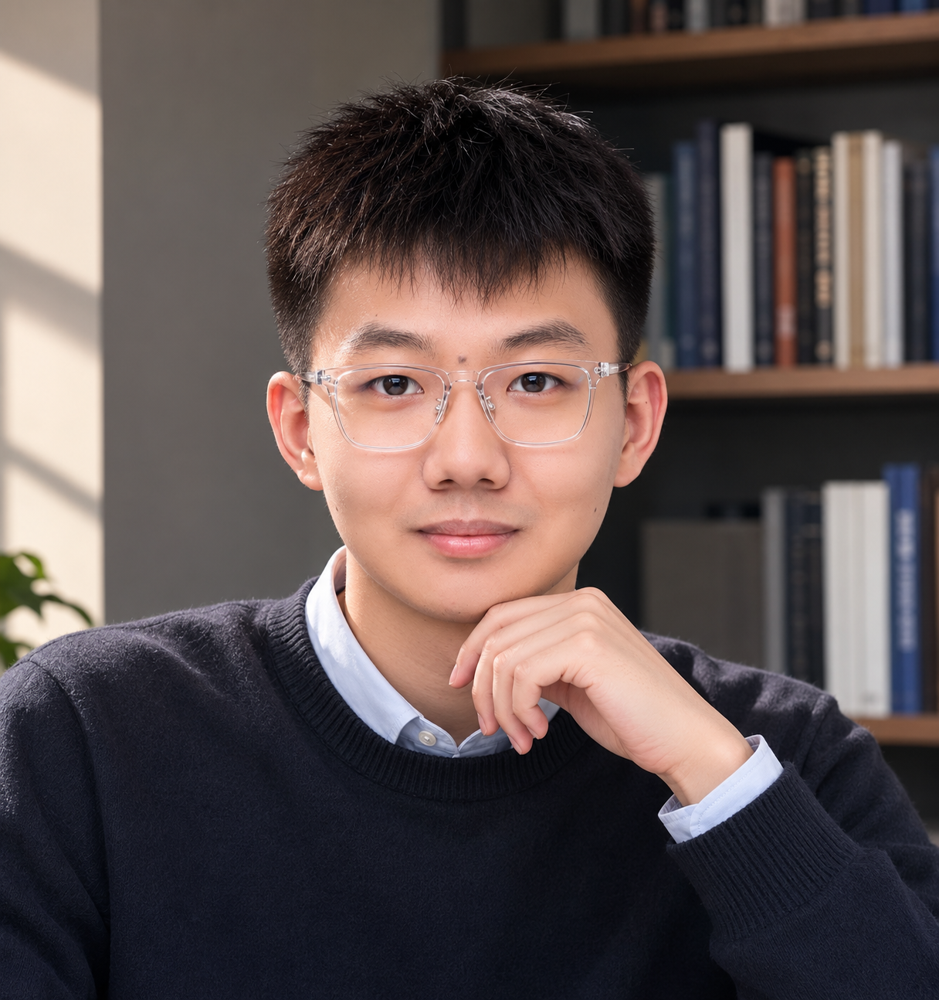

01
Computational Optics
Co-designing optical modulation, sensor architecture, calibration, and reconstruction for compact high-performance imaging systems.
Computational Optics / Optical Computing / Computational Spectroscopy
PhD student in Electrical and Computer Engineering at The University of Hong Kong, researching computational optics, optical computing, high-dimensional spectral sensing, and AI-driven image restoration.

Profile
I am a PhD student in Electrical and Computer Engineering at The University of Hong Kong, with a research focus on computational optics. My broader research interests include computational imaging, optical computing, computational spectroscopy, hyperspectral sensing, and AI-based visual reconstruction.
Before joining HKU, I received my M.Eng. in Information and Communication Engineering from Beijing Institute of Technology, where I worked with the Computational Imaging and Sensing Lab on hyperspectral image sensors, metasurface spectral imaging, and reconstruction algorithms. I also worked at SenseTime Research on diffusion-based image generation, restoration, and mobile deployment.
Research Direction
My work connects light modulation, compact optical hardware, inverse reconstruction, and vision foundation models for high-dimensional visual information acquisition.
Co-designing optical modulation, sensor architecture, calibration, and reconstruction for compact high-performance imaging systems.
Exploring optical-domain encoding and computation to improve sensing efficiency, bandwidth, and physical interpretability.
Building spectral sensors and reconstruction models for broadband, high-resolution, and wide-wavelength measurements.
Selected Work
Proposed an on-chip hyperspectral imaging architecture based on broadband light modulation, with compact sensors covering 400-1000 nm and 400-1700 nm.
Designed DiffTSR with image and text diffusion models to recover severely degraded text images with more accurate structures and realistic visual details.
Developed deep-unfolding reconstruction with multidimensional attention for low-crosstalk spectral imaging from compact metasurface measurements.
Led student-side research on broadband miniature spectrometers using light modulation, quantum dots, filter arrays, and compressive sensing.
Publications
Authors marked with dagger contributed equally. Asterisk indicates corresponding author.
Jinxuan Wu, Daoyu Li, Jiajun Zhao, Hanwen Xu, Yuzhe Zhang, Liheng Bian
Optics Letters, 2025, vol. 50, no. 3, pp. 972-975.
Liheng Bian†*, Zhen Wang†, Yuzhe Zhang†, et al.
Nature, 2024. Highlighted by Nature Photonics.
Haoyang He†, Yuzhe Zhang†, Yujie Shao, et al.
Advanced Materials, 2024.
Yuzhe Zhang, Jiawei Zhang, Hao Li, et al.
IEEE/CVF Conference on Computer Vision and Pattern Recognition (CVPR), 2024.
Yuzhe Zhang, Shuai Wang, Qiang Jiao, et al.
Oral Presentation, SPIE Photonics Asia, 2023.
Experience
Doctor of Philosophy, Electrical and Computer Engineering. Research: Computational Optics.
Computer vision algorithm researcher in intelligent imaging; worked on ISP, diffusion models, transformers, face restoration, text image super-resolution, and mobile deployment. Received Outstanding Intern recognition.
Master of Engineering, Information and Communication Engineering. National Scholarship, Top 1%.
Student team leader for broadband miniature spectrometer research, focusing on light modulation, quantum dots, spectral filter arrays, and compressive sensing.
Credentials
Contact